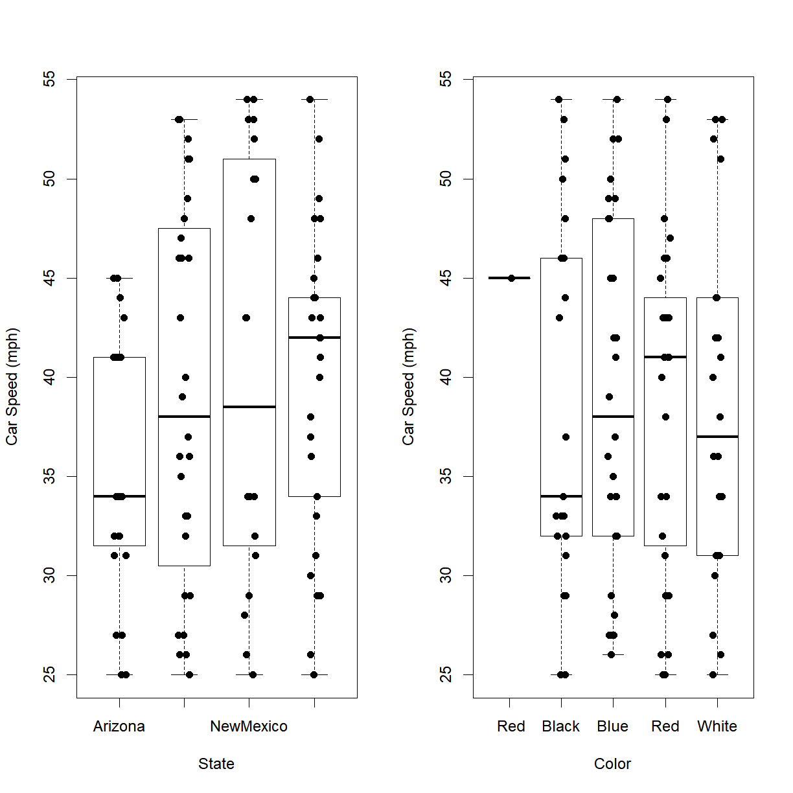
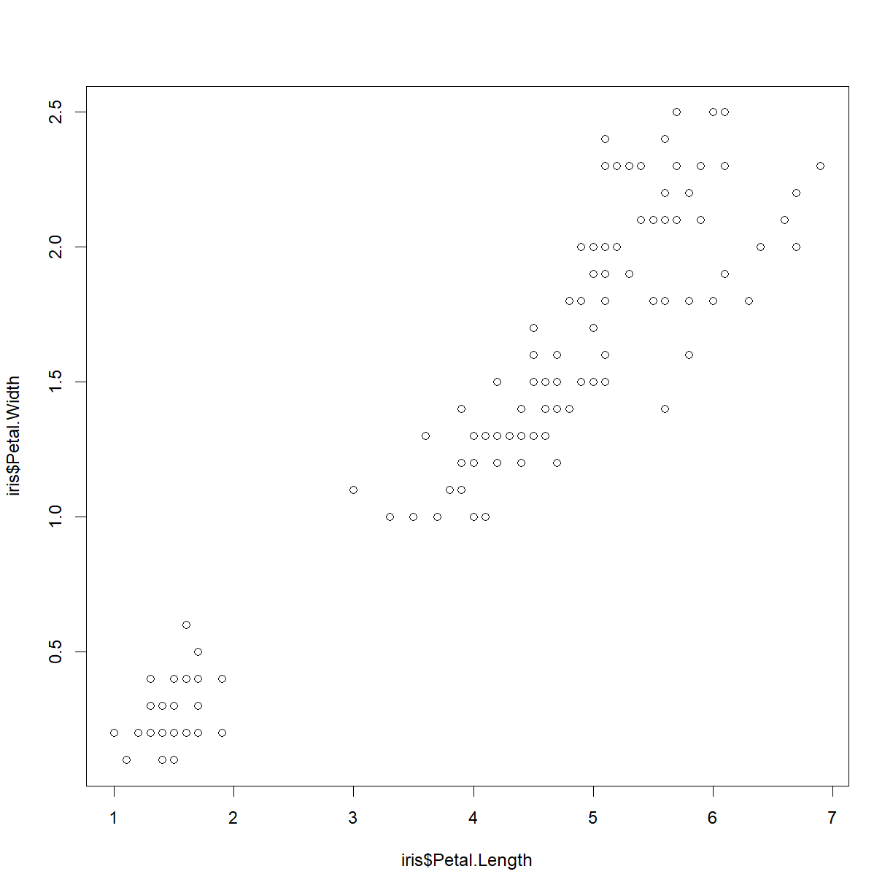
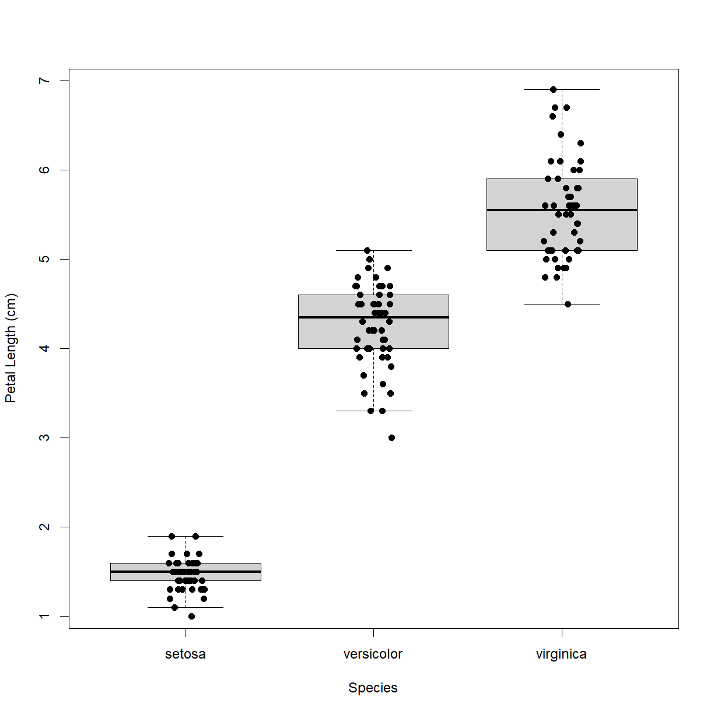

Manipulating and Plotting Data
Overview
Class Date: 9/2/2021 -- In Class
Teaching: 90 min
Exercises: 30 minQuestions
How do I read data from a .csv or .txt file into R?
How do I write data to a .csv or .txt file?
How do I calculate simple statistics from my data?
How can I plot my data?
How do I save my plots to a PDF file?
Objectives
Be able to employ functions available in the base R language to calculate basis statistics for a dataset.
Generate and display simple graphs.
Save plot(s) to a PDF file.
In Class
Calculating basic statistics
The standard R installation provides many functions for calculating basic statistics about your data. Here is a sampling of some of the most generally useful:
Functions for calculating descriptive statistics
Averages:
mean()- arithmetic meanmedian()- medianmode()- modeRange:
min()- minimum value in rangemax()- maximum value in rangerange()- minimum and maximum value in rangequantile()- quantiles corresponding to the given probabilities (probsargument; defaults to quartiles `c(0, 0.25, 0.5, 0.75, 1.0))IQR()- interquartile range (Q3 - Q1)Variability:
var()- variancesd()- standard deviationmad()- median absolute deviation Note: there is no built-in function for calculating standard error of mean (SEM), but this can be easily calculated usingsd(x)/sqrt(length(x)). There are also packages that have functions available (e.g.pastecs).Miscellaneous:
summary()- summary statistics based on data typetable()- generate frequency or contingency table
Let’s start by performing some common mathematical operations to learn more about our data.We will load a fresh copy of our sample data to reset any unintended changes from previous lessons and be sure that we include header=TRUE and stringsAsFactors=FALSE arguments.
dat <- read.csv(file="data/sample.csv", header=TRUE, stringsAsFactors=FALSE)
This data is the result of a fictional experiment looking at the number of aneurisms that formed in the eyes of patients who undertook 3 different treatments.
We can use the basic descriptive functions to calculate values like minimum, mean, median, and standard deviation of a given variable data:
# minimum number of aneurisms in q3
min(dat$Aneurisms_q3)
[1] 105
# mean number of aneurisms in q3
mean(dat$Aneurisms_q3)
[1] 219.85
# median number of aneurisms in q3
median(dat$Aneurisms_q3)
[1] 217
# standard deviation number of aneurisms in q3
sd(dat$Aneurisms_q3)
[1] 48.76958
# total number of observations in q3
length(dat$Aneurisms_q3)
[1] 100
R has a function called summary() that provides a convenient summary of each column if all you want is some basic statistics about each of your variables (without reference to subsets):
# Summarize function
summary(dat)
ID Gender Group BloodPressure
Length:100 Length:100 Length:100 Min. : 62.0
Class :character Class :character Class :character 1st Qu.:107.5
Mode :character Mode :character Mode :character Median :117.5
Mean :118.6
3rd Qu.:133.0
Max. :173.0
Age Aneurisms_q1 Aneurisms_q2 Aneurisms_q3
Min. :12.10 Min. : 65.0 Min. : 80.0 Min. :105.0
1st Qu.:14.78 1st Qu.:118.0 1st Qu.:131.5 1st Qu.:182.5
Median :16.65 Median :158.0 Median :162.5 Median :217.0
Mean :16.42 Mean :158.8 Mean :168.0 Mean :219.8
3rd Qu.:18.30 3rd Qu.:188.0 3rd Qu.:196.8 3rd Qu.:248.2
Max. :20.00 Max. :260.0 Max. :283.0 Max. :323.0
Aneurisms_q4
Min. :116.0
1st Qu.:186.8
Median :219.0
Mean :217.9
3rd Qu.:244.2
Max. :315.0
For every column in the data frame, summary() provides different set of information depending on the class of that column. For instance, for numeric columns, summary() provides minimum, maximum, mean, median, and quartile values.
When analyzing data we usually want to look at partial statistics, such as the maximum value of a phenotype for a given patient or the average value per treatment group. The most direct way to accomplish this goal is to use indexing to select the data subset we want and then perform the calculation on the data subset:
# select aneurism data for the first subject
sub1 <- dat[1, 6:9]
# calculate the max number of aneurisms for subject 1 across # time points
max(sub1)
[1] 237
We don’t actually need to store the row in a variable of its own. Instead, we can combine the selection and the function call:
# maximum number of aneurisms for subject 2
max(dat[2, 6:9])
[1] 248
The table() function calculates frequency or contingency tables, which can be useful for understanding the structure of our data. For example, we can look at the number of patients in each treatment group:
table(dat$Group)
Control Treatment1 Treatment2
30 35 35
By including multiple arguments from the dataset, we can look at the data broken down across multiple variables, such as treatment group and gender:
table(dat$Group, dat$Gender)
f F m M
Control 13 1 14 2
Treatment1 10 2 15 8
Treatment2 12 1 17 5
Oops… Looks like someone was being lazy with their data entry for gender. How can we fix the capitalization error?
Correcting capitalization
There is a mixture of lower case (m, f) and uppder case entries in the
dat$Gendervariable.# First load the data if you haven't already dat <- read.csv(file="data/sample.csv", header=TRUE, stringsAsFactors=FALSE) # Look at the `Gender` data dat$Gender[1] "m" "m" "m" "f" "m" "M" "f" "m" "m" "f" "m" "f" "f" "m" "m" "m" "f" "m" [19] "m" "F" "f" "m" "f" "f" "m" "M" "M" "f" "m" "f" "f" "m" "m" "m" "m" "f" [37] "f" "m" "M" "m" "f" "m" "m" "m" "f" "f" "M" "M" "m" "m" "m" "f" "f" "f" [55] "m" "f" "m" "m" "m" "f" "f" "f" "f" "M" "f" "m" "f" "f" "M" "m" "m" "m" [73] "F" "m" "m" "f" "M" "M" "M" "f" "m" "M" "M" "m" "m" "f" "f" "f" "m" "m" [91] "f" "m" "F" "f" "m" "m" "F" "m" "M" "M"Correct all
Gendervalues to upper case.Solution
Option 1 - use data subsets and logical indexing to correct
ms andfs individually:dat$Gender[dat$Gender == "m"] <- "M" dat$Gender[dat$Gender == "f"] <- "F" dat$Gender[1] "M" "M" "M" "F" "M" "M" "F" "M" "M" "F" "M" "F" "F" "M" "M" "M" "F" "M" [19] "M" "F" "F" "M" "F" "F" "M" "M" "M" "F" "M" "F" "F" "M" "M" "M" "M" "F" [37] "F" "M" "M" "M" "F" "M" "M" "M" "F" "F" "M" "M" "M" "M" "M" "F" "F" "F" [55] "M" "F" "M" "M" "M" "F" "F" "F" "F" "M" "F" "M" "F" "F" "M" "M" "M" "M" [73] "F" "M" "M" "F" "M" "M" "M" "F" "M" "M" "M" "M" "M" "F" "F" "F" "M" "M" [91] "F" "M" "F" "F" "M" "M" "F" "M" "M" "M"Option 2 - use the
toupper()function to correct the entire vector at once:dat$Gender <- toupper(dat$Gender) dat$Gender[1] "M" "M" "M" "F" "M" "M" "F" "M" "M" "F" "M" "F" "F" "M" "M" "M" "F" "M" [19] "M" "F" "F" "M" "F" "F" "M" "M" "M" "F" "M" "F" "F" "M" "M" "M" "M" "F" [37] "F" "M" "M" "M" "F" "M" "M" "M" "F" "F" "M" "M" "M" "M" "M" "F" "F" "F" [55] "M" "F" "M" "M" "M" "F" "F" "F" "F" "M" "F" "M" "F" "F" "M" "M" "M" "M" [73] "F" "M" "M" "F" "M" "M" "M" "F" "M" "M" "M" "M" "M" "F" "F" "F" "M" "M" [91] "F" "M" "F" "F" "M" "M" "F" "M" "M" "M"For good measure, let’s save the corrected data to a new file
write.csv(dat, file = "data/sample-gendercorrected.csv", row.names=F)
Now the contingency table is more useful:
table(dat$Group, dat$Gender)
F M
Control 14 16
Treatment1 12 23
Treatment2 13 22
In many instances, we will want to break data down by groups (e.g. treatment groups) and calculate statistics on each sub group. Functions like apply() and aggregate() are designed for this purpose, and you will be looking at how to use these On Your Own.
Plotting
The mathematician Richard Hamming once said,
“The purpose of computing is insight, not numbers.”
The best way to develop insight is often to visualize data. Visualization deserves an entire lecture (or course) of its own, and we will touch on various aspects of R’s plotting functionality later on in the course, but for now we will introduce a few of R’s plotting features.
An alternative package for plotting in R
There is a popular package called
ggplot2that many R users prefer to the base plotting functions included with R. This package is more efficient in many ways and most users like the default look of the graphics better. For these reasons,ggplot2is worth exploring. The caveat is thatggplot2uses a very different syntax for generating plots and does have a few limitations. My personal preference is to use R base graphics, because I often create more complex graphics, and base package is flexible enough to do anything once you understand all of the ins and outs of the various plotting functions. I have run into a few places where generating the exact graphic I wanted was not possible inggplot2.
The basic plot function in R is called, conveniently, plot(). Let’s take a quick look:
?plot
In it’s most basic form, plot(x,y) function will create a scatter plot with points defined by the vectors x and y. Let’s start out with the iris data set and look at the relationship between petal length and width:
plot(iris$Petal.Length, iris$Petal.Width)

Congratulations! You have plotted your first data in R. So what is going on in the background here? Let’s talk about what R is actually doing when you give it the plot command.
Graphics devices
When you tell R to run a plot, it actually takes a series of actions:
- Opens a new “graphics device”. This device can be one of several things:
a. The Plot pane in the lower-right panel of RStudio. RStudio uses this graphics device by default if you don’t tell it to use something else.
b. A blank graphics pane in a new window (this requires the
windows()orquartz()commands, which we discuss below). c. An external image file (e.g. a new .jpg file). d. An external PDF file (complete with vector graphics!). - Draws a series of objects; this part is done “under the hood” of the
plot()function, and includes: a. Axes. b. Tick marks. c. Axis labels. d. Data points. e. Legend(s). f. Chart titles. g. Other text, if specified. - Leaves the current graphics device open for additional drawing input. This step is important, because it means that you can continue to add things to the current image by calling additional functions.
- Closes the graphics device following a
dev.off()function call. This essentially “finalizes” the image.
Note that you can have multiple graphics devices open at once. R will, by default, write new graphics to the most recently used or created graphics device. Some functions, like plot() automatically start a new graphics device (or page in the case of the RStudio panel or a PDF), while other functions, like lines(), will add graphical elements to the most recently used device.
Let’s repeat our above plot() command in a few different graphics devices to illustrate a their functionality.
Plotting in a separate window
I often find it useful to plot to a separate window, rather than the Plot pane, because it better simulates plotting to a file like a PDF, which is usually the final goal of building a plot. The window allows you to follow the creation of your graphic live, while you can’t see what is happening in a .jpg or .pdf until you have finalized the graphic.
To plot in a separate window within RStudio, use one of the following platform-dependent functions:
windows() # Windows
quartz() # MacOS
Now recreate our above plot:
plot(iris$Petal.Length, iris$Petal.Width)

Note that we can now add additional elements to this plot. Let’s add a chart title:
title("Relationship between petal length and petal width")

We can shutdown the window by either just closing it, or from RStudio using the dev.off() function.
dev.off()
null device
1
Plotting to an external file
R has a series of functions designed to open a graphics device that will write directly to an external file. These files can be image files or PDFs.
bmp()generates a .bmpjpeg()generates a .jpgpng()generates a .pngtiff()generates a .tifpdf()generates a .pdf
The first four are all versions of the same function and behave essentially interchangably. PDF is a separate function. The primary difference between the two is that the non-PDF image files will have a defined resolution, while the PDF files are generated as vector graphics, meaning that they maintain resolution at any size.
Vector graphics
Traditional image formats (e.g. .bmp, .jpg, .tiff, .png) are, in essence, a two dimensional array of color and intensity values (such as red-green-blue, or RGB values). The array has a fixed number of pixels in each dimension, so if you take an image that is 1 in x 1 in with 100 pixels in each dimension, and blow it up to 1 ft x ft, it still only has 100 pixels in each dimension. The blowup image will appear blocky, or “pixelated”.
Vector graphics are distinct from traditional graphics in that they are defined by a set of mathematical operations carried out at specified > coordinates. For example, two of the instructions may be something like:
- Draw the letter “A” in normal size 10 Arial font at coordinates (10, 10).
- Draw the an arrow with line weight 2 and arrow head style X size 4 from the point (12, 12) to the point (20, 20).
These instructions are the same for a 1 in x 1 in image and a 1 ft x 1 ft image (or a 1 mile x 1 mile image). Because the shape of the letter and the arrow are defined by the font and the arrow head style, when the image is rendered, they can be drawn with the appropriate number of pixels to appear crisp and smooth at the image size requested.
This is how PDF files and other vector graphic formats work. They are really convenient for preparing manuscripts because journals often want a low-res file for review and a high-res file for publication. By starting with a PDF you can generate both categories of graphic with the same underlying file. any modern journals prefer that figures be submitted as PDF or other vector graphics format for this very reason.
Let’s give both types of graphic generation a try by generating our previous plot as a .jpg** and **.PDF file.
First, let’s create a new directory in our class folder for results (another best practice). We can do from within R using the dir.create() function:
dir.create("results")
Take a look at the jpeg() function to see what it needs:
?jpeg()
Technically, you don’t have to give jpeg() any input. By default, the function will generate a new .jpg image with an automatically generated name in our home directory. However, we want to at least specify both a directory and a file name for the newly created image.
Also by default, the function will produce a 480 px x 480 px image at 72 pixels per inch (ppi). Note that the actual physical image size will be size inches = size in pixels/ppi. Let’s make a 100 ppi .jpg image that is 5 in x 5 in:
jpeg(file = "results/petal-width-length-comparison.jpg", width = 500, height = 500, res = 100)
Now look inside your results folder. If the jpeg() function worked correctly and our directories were correctly specified, you should now see a new file called petal-width-length-comparison.jpg. What happens when you try to open this file?
You should get an error. This is because the file has been created, but that it is currently open in RStudio waiting for more input. We can use the dev.cur() to confirm that the active graphics device is indeed the JPEG file.
dev.cur()
Let’s give it our earlier plot() and title() commands, and then turn off the device (using dev.off()) to complete and close the file.
plot(iris$Petal.Length, iris$Petal.Width)
title("Relationship between petal length and petal width")

dev.off()
jpeg
3
Now try opening the petal-width-length-comparison.jpg. We have our chart in JPG format! Zoom in to check out the resolution. Not great? Generating JPEG or other graphics formats is useful for some applications (e.g. charts for use in a webpage, for example), but for generating reports and paper figures, vector graphics are the way to go. That’s why I tend to work almost exclusively generate my charts as PDF files, and so will we for the rest of the course.
So let’s do it. First let’s take a look at the pdf() function:
?pdf()
While pdf() still wants the file name as the file = argument, we now specify width and height in inches to define the size of the file, and exclude resolution because PDF files are vector graphics and will be generated to the resolution required by the size. This is more intuitive (we just ask for the image size that we way, instead of having to calculate it from pixel number and ppi), and more convenient. We can now generate any size output we want, including a nice, printable 8.5 in x 11 in standard paper size. This is useful for reports. Usually a smaller figure is more appropriate when generating a figure that you will embed in a manuscript.
For the moment, we will generate the PDF equivalent of our earlier JPEG, with dimensions of 5 in x 5 in. For fun, let’s also include a second plot that compares sepal length and width:
# generate the PDF file
pdf(file = "results/iris-aspect-ratio-comparison.pdf", width = 5, height = 5)
# plot petal length vs. width
plot(iris$Petal.Length, iris$Petal.Width)
title("Relationship between petal length and petal width")
# plot petal length vs. width
plot(iris$Sepal.Length, iris$Sepal.Width)
title("Relationship between sepal length and sepal width")
# finalize the PDF
dev.off()
Notice a couple of important things:
- Zooming in and out in the PDF does not affect image resolution. It always looks sharp! This is the advantage of vector graphics.
- Running
plot()the second time generated a second page in the PDF file. If you want a new file for every figure, set the argumentonefile = Tin thepdf()function (see the?pdfdocumentation for details).
Fixing the axis labels
Okay, so we know how to generate a chart. Clearly the default parameters are not what we want. First, what is up with the axis labels? By default, R will just use the variable name as the axis labels, having nothing else to work with. We can add out own labels with the xlab and ylab arguments.
For now, we will just use the plot window in RStudio to demonstrate a few of the features of plot(). To make sure you don’t have any open graphics devices, run dev.off() a few times before moving forward.
plot(iris$Petal.Length, iris$Petal.Width,
xlab = "Petal Length (cm)",
ylab = "Petal Width (cm)")

That’s better!
Now, looking at the data itself, there does seem to be an odd pattern. There is clearly a distinct group in the lower left corner with smaller petals. Let’s remind ourselves what information we have available:
head(iris)
Sepal.Length Sepal.Width Petal.Length Petal.Width Species
1 5.1 3.5 1.4 0.2 setosa
2 4.9 3.0 1.4 0.2 setosa
3 4.7 3.2 1.3 0.2 setosa
4 4.6 3.1 1.5 0.2 setosa
5 5.0 3.6 1.4 0.2 setosa
6 5.4 3.9 1.7 0.4 setosa
The most obvious candidate to explain the separate grouping is species. We can add color to see if that grouping is all one species using the col argument. R has many color names available by default which can be listed using the colors() function:
head(colors())
[1] "white" "aliceblue" "antiquewhite" "antiquewhite1"
[5] "antiquewhite2" "antiquewhite3"
length(colors())
[1] 657
To request a specific color, simply specify the color name as a character string (e.g. "blue"). You can also select colors by hex code or RGB value with other functions, details on which can be found on this helpful R color guide.
First, we can just specify a color for the whole plot using the argument col = "<color name>".
plot(iris$Petal.Length, iris$Petal.Width,
xlab = "Petal Length (cm)", ylab = "Petal Width (cm)",
col = "blue")

Of course, we don’t want all of the points to be blue. The col argument can also take a list that is the same length of the x and y arguments that assigns individual color values to each point. Since we know the species order for the point, we can use logical indexing to assign colors to each species.
# iris$Species is a factor, which makes things easier in this case
iris$Species
[1] setosa setosa setosa setosa setosa setosa
[7] setosa setosa setosa setosa setosa setosa
[13] setosa setosa setosa setosa setosa setosa
[19] setosa setosa setosa setosa setosa setosa
[25] setosa setosa setosa setosa setosa setosa
[31] setosa setosa setosa setosa setosa setosa
[37] setosa setosa setosa setosa setosa setosa
[43] setosa setosa setosa setosa setosa setosa
[49] setosa setosa versicolor versicolor versicolor versicolor
[55] versicolor versicolor versicolor versicolor versicolor versicolor
[61] versicolor versicolor versicolor versicolor versicolor versicolor
[67] versicolor versicolor versicolor versicolor versicolor versicolor
[73] versicolor versicolor versicolor versicolor versicolor versicolor
[79] versicolor versicolor versicolor versicolor versicolor versicolor
[85] versicolor versicolor versicolor versicolor versicolor versicolor
[91] versicolor versicolor versicolor versicolor versicolor versicolor
[97] versicolor versicolor versicolor versicolor virginica virginica
[103] virginica virginica virginica virginica virginica virginica
[109] virginica virginica virginica virginica virginica virginica
[115] virginica virginica virginica virginica virginica virginica
[121] virginica virginica virginica virginica virginica virginica
[127] virginica virginica virginica virginica virginica virginica
[133] virginica virginica virginica virginica virginica virginica
[139] virginica virginica virginica virginica virginica virginica
[145] virginica virginica virginica virginica virginica virginica
Levels: setosa versicolor virginica
levels(iris$Species)
[1] "setosa" "versicolor" "virginica"
# Let's define a list of colors to use in the plot. The color order
# will be assigned in order of factor levels
col.list <- c("red", "blue", "green")
# Recall that when we enter a factor as an index, R sees the underlying numeric representation
as.numeric(iris$Species)
[1] 1 1 1 1 1 1 1 1 1 1 1 1 1 1 1 1 1 1 1 1 1 1 1 1 1 1 1 1 1 1 1 1 1 1 1 1 1
[38] 1 1 1 1 1 1 1 1 1 1 1 1 1 2 2 2 2 2 2 2 2 2 2 2 2 2 2 2 2 2 2 2 2 2 2 2 2
[75] 2 2 2 2 2 2 2 2 2 2 2 2 2 2 2 2 2 2 2 2 2 2 2 2 2 2 3 3 3 3 3 3 3 3 3 3 3
[112] 3 3 3 3 3 3 3 3 3 3 3 3 3 3 3 3 3 3 3 3 3 3 3 3 3 3 3 3 3 3 3 3 3 3 3 3 3
[149] 3 3
# Note: if you are are starting with a character vector, you can
# achieve this same effect by first converting the charater to a factor,
# then converting the factor to numeric: as.numeric(as.factor(x))
# Taking advantage of this, we can directly index our color list and set # up a vector the length of iris$Species with a unique color value for
# each species name
col.vector <- col.list[iris$Species]
col.vector
[1] "red" "red" "red" "red" "red" "red" "red" "red" "red"
[10] "red" "red" "red" "red" "red" "red" "red" "red" "red"
[19] "red" "red" "red" "red" "red" "red" "red" "red" "red"
[28] "red" "red" "red" "red" "red" "red" "red" "red" "red"
[37] "red" "red" "red" "red" "red" "red" "red" "red" "red"
[46] "red" "red" "red" "red" "red" "blue" "blue" "blue" "blue"
[55] "blue" "blue" "blue" "blue" "blue" "blue" "blue" "blue" "blue"
[64] "blue" "blue" "blue" "blue" "blue" "blue" "blue" "blue" "blue"
[73] "blue" "blue" "blue" "blue" "blue" "blue" "blue" "blue" "blue"
[82] "blue" "blue" "blue" "blue" "blue" "blue" "blue" "blue" "blue"
[91] "blue" "blue" "blue" "blue" "blue" "blue" "blue" "blue" "blue"
[100] "blue" "green" "green" "green" "green" "green" "green" "green" "green"
[109] "green" "green" "green" "green" "green" "green" "green" "green" "green"
[118] "green" "green" "green" "green" "green" "green" "green" "green" "green"
[127] "green" "green" "green" "green" "green" "green" "green" "green" "green"
[136] "green" "green" "green" "green" "green" "green" "green" "green" "green"
[145] "green" "green" "green" "green" "green" "green"
# note that the lengths are indeed the same
length(iris$Species) == length(col.vector)
[1] TRUE
Now that we have our color assignments stored in the col.vector variable, we can use that to color our plot by species.
plot(iris$Petal.Length, iris$Petal.Width,
xlab = "Petal Length (cm)", ylab = "Petal Width (cm)",
col = col.vector)

As suspected, the lower left grouping is a single species. The other upper right grouping also breaks down nicely by species. But which is which? We can add a legend using the (you guessed it!) legend() function. First let’s look at the inputs:
?legend
The legend() function is not very smart. It does not actually have access to any information about the plot, and requires that we give it all of information about what information to include. This can be annoying for basic plots, but it gives you the flexibility to customize the information in your charts to any degree that you like.
At a minimum, we need to give it the following arguments:
xtells R where to put the legend on the plot. You can give it simple direction like"center",left, orbottomright.legendtells R the list of labels for the legend, in this case we want the species names in factor level order (yes, the argument name is the same)coltells R the colors to display. We want to give it the same color order that we used to generate the species-matched color list.pchtells R the type of symbol to display. By default, theplot()function setspch = 1, but this does not have a default value inlegend()for some reason. For now we wantpch = 1to match theplot()default.
legend("bottomright", legend = levels(iris$Species), col=col.list, pch=1)
Now we can see that the Iris setosa species has the small petals.
Assigning colors based on contents of a character vector
What if the iris$Species were saved as a
characterinstead of afactor? How would you go about generating yourcol.listinput?Let’s define a new dataset where this is the case:
iris2 <- iris iris2$Species <- as.character(iris$Species)Hint
Aside from just converting your character back to a vector, there is a directly solution with the character vector. Check out the
unique()andmatch()functions.Solution
First make sure our color list is defined:
# Make sure our color list is defined col.list <- c("red", "blue", "green")Here are two solutions:
Option 1 – just convert the character to a factor
# Add the `as.factor()` function to the indexing when defining col.list col.vector <- col.list[as.factor(iris$Species)] col.vector[1] "red" "red" "red" "red" "red" "red" "red" "red" "red" [10] "red" "red" "red" "red" "red" "red" "red" "red" "red" [19] "red" "red" "red" "red" "red" "red" "red" "red" "red" [28] "red" "red" "red" "red" "red" "red" "red" "red" "red" [37] "red" "red" "red" "red" "red" "red" "red" "red" "red" [46] "red" "red" "red" "red" "red" "blue" "blue" "blue" "blue" [55] "blue" "blue" "blue" "blue" "blue" "blue" "blue" "blue" "blue" [64] "blue" "blue" "blue" "blue" "blue" "blue" "blue" "blue" "blue" [73] "blue" "blue" "blue" "blue" "blue" "blue" "blue" "blue" "blue" [82] "blue" "blue" "blue" "blue" "blue" "blue" "blue" "blue" "blue" [91] "blue" "blue" "blue" "blue" "blue" "blue" "blue" "blue" "blue" [100] "blue" "green" "green" "green" "green" "green" "green" "green" "green" [109] "green" "green" "green" "green" "green" "green" "green" "green" "green" [118] "green" "green" "green" "green" "green" "green" "green" "green" "green" [127] "green" "green" "green" "green" "green" "green" "green" "green" "green" [136] "green" "green" "green" "green" "green" "green" "green" "green" "green" [145] "green" "green" "green" "green" "green" "green"# Check the plot output plot(iris2$Petal.Length, iris2$Petal.Width, xlab = "Petal Length (cm)", ylab = "Petal Width (cm)", col = col.vector) legend("bottomright", legend = levels(as.factor(iris2$Species)), col=col.list, pch=1)
Option 2 – Use the
match()function to determine which color to assign to each element of col.vector based on the element of the species character vector.# Now, since we don't have the underlying numeric structure of the # factor, we need a way to generate the same index list with a # character vector. We can do this using the match() function. species.list <- unique(iris2$Species) # first grab the species list using unique() species.list[1] "setosa" "versicolor" "virginica"# For each element in the first list, match() essentially asks R "where # is this element in the second list?" It returns the numeric position, # or index. species.index <- match(iris$Species, species.list) species.index[1] 1 1 1 1 1 1 1 1 1 1 1 1 1 1 1 1 1 1 1 1 1 1 1 1 1 1 1 1 1 1 1 1 1 1 1 1 1 [38] 1 1 1 1 1 1 1 1 1 1 1 1 1 2 2 2 2 2 2 2 2 2 2 2 2 2 2 2 2 2 2 2 2 2 2 2 2 [75] 2 2 2 2 2 2 2 2 2 2 2 2 2 2 2 2 2 2 2 2 2 2 2 2 2 2 3 3 3 3 3 3 3 3 3 3 3 [112] 3 3 3 3 3 3 3 3 3 3 3 3 3 3 3 3 3 3 3 3 3 3 3 3 3 3 3 3 3 3 3 3 3 3 3 3 3 [149] 3 3# And we use the species.index in place of iris$Species to do the # indexing and generate our color list for each point on the plot col.vector <- col.list[species.index] col.vector[1] "red" "red" "red" "red" "red" "red" "red" "red" "red" [10] "red" "red" "red" "red" "red" "red" "red" "red" "red" [19] "red" "red" "red" "red" "red" "red" "red" "red" "red" [28] "red" "red" "red" "red" "red" "red" "red" "red" "red" [37] "red" "red" "red" "red" "red" "red" "red" "red" "red" [46] "red" "red" "red" "red" "red" "blue" "blue" "blue" "blue" [55] "blue" "blue" "blue" "blue" "blue" "blue" "blue" "blue" "blue" [64] "blue" "blue" "blue" "blue" "blue" "blue" "blue" "blue" "blue" [73] "blue" "blue" "blue" "blue" "blue" "blue" "blue" "blue" "blue" [82] "blue" "blue" "blue" "blue" "blue" "blue" "blue" "blue" "blue" [91] "blue" "blue" "blue" "blue" "blue" "blue" "blue" "blue" "blue" [100] "blue" "green" "green" "green" "green" "green" "green" "green" "green" [109] "green" "green" "green" "green" "green" "green" "green" "green" "green" [118] "green" "green" "green" "green" "green" "green" "green" "green" "green" [127] "green" "green" "green" "green" "green" "green" "green" "green" "green" [136] "green" "green" "green" "green" "green" "green" "green" "green" "green" [145] "green" "green" "green" "green" "green" "green"# Finally, we can generate our plot. Note that we now use # "species.list" in place of "levels(iris$Species)" for the legend plot(iris2$Petal.Length, iris2$Petal.Width, xlab = "Petal Length (cm)", ylab = "Petal Width (cm)", col = col.vector) legend("bottomright", legend = species.list, col=col.list, pch=1)

Box and whisker plots
We can now draw a scatter plot in R to look at the relationship between two variables. What if we want to compare a single data type across species? This is (still) most commonly done using bar charts with error bars. There is a movement in the biological sciences community to move away from bar charts and toward box and whisker plots. R is better equipped for the latter case any way, and that’s what we will work with in this course.
Why use box and whisker charts instead of bar charts?
While bar charts are still more common and have their uses, box and whisker plots are almost always better. A few problems with bar charts are that they:
- only show summary statistics (mean and variation)
- hide information on the shape of the data distribution
- can easily be used to misrepresent the size of differences between data
- do not have standard error bars (standard deviation and standard error are both common)
Box and whisker plots provide a lot more detail about the data represented. A typical box and whisker plot include:
- median (line in the middle of the box)
- quartiles (the size of the box)
- 95 percentiles (whiskers)
- outliers (points beyond whiskers)
- all data points (less common, but a good idea)
- mean (also less common, but a good idea)
We can use the boxplot() function to generate box and whisker plots in R. To do so, we will usually use formula notation to enter the data. In this case, the first argument should be a formula indicating which data you want to plot and how your want it broken out, separated by the ~ symbol:
<plot variable> ~ <separator variable>
You can also provide the name of the data frame using the data argument, and then just use the column names directly in the formula. Let’s give both a try for Petal Length separated by Species in the iris dataset. These statements are equivalent, except for the axis labels:

boxplot(Petal.Length ~ Species, data = iris)

It is a best practice to show all your data points (at least until you have hundreds or thousands) on box plots, which we can add to our plot using the stripchart() function. The basic format is similar to that for boxplot(). We need to add a couple of arguments to make it work. The first is add = TRUE. This tells R to add the points to the current plot, instead of generating a new plot (which is the default behavior). The second is vert = TRUE, which tells R that we want the data plotted vertically (horizontal is the default for some reason). Let’s try it:
stripchart(Petal.Length ~ Species, data = iris, add=TRUE, vert=TRUE)
Okay, the points are there, but they have some issues. Let’s add some information to improve the quality. Note that we need to rerun the boxplot command to regenerate the base plot before fixing the strip chart issues (otherwise they will just keep adding new points to the current chart and make a mess).
We will make the following changes:
boxplot():
outline = FALSEprevents outlier points from being plotted (strip chart will be plotting all of the points anyway).ylab = "Petal Length (cm)"cleans up our y-axis label.
stripchart():
pch = 16instripchart()changes the point from an open square to a solid circle, which is easier to see against the box plot.method = "jitter"instripchart()offsets each point in the “x” direction by a small random amount so that you can see overlapping points.
boxplot(Petal.Length ~ Species, data = iris,
outline = FALSE, ylab = "Petal Length (cm)")
stripchart(Petal.Length ~ Species, data = iris,
pch = 16, method = "jitter",
add=TRUE, vert=TRUE)

Better! Now this is a chart that is easy to read and shows all of the relevant data. On Your Own you will be digging into plotting in additional detail, including how to make multipanel plots and segregate data in boxplots by more than one independent variable.
Key Points
Use
mean,max,min, andsdto calculate simple statistics.Use
plotto create simple visualizations.Display simple graphs.
Save a plot in a pdf file using
pdf(...)and stop writing to the pdf file withdev.off().